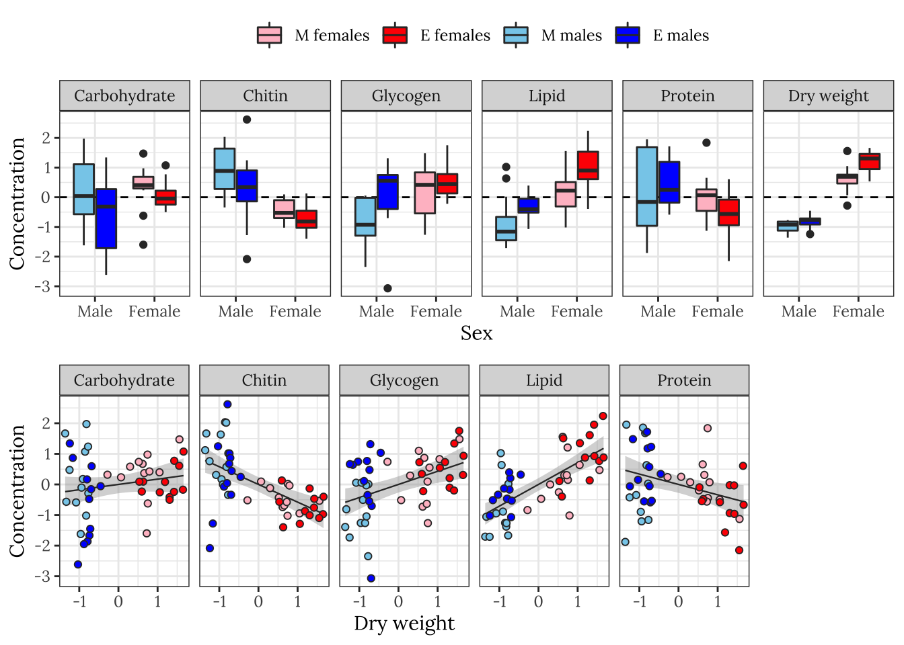

Metabolic rates
Last updated: 2020-12-04
Checks: 7 0
Knit directory: exp_evol_respiration/
This reproducible R Markdown analysis was created with workflowr (version 1.6.2). The Checks tab describes the reproducibility checks that were applied when the results were created. The Past versions tab lists the development history.
Great! Since the R Markdown file has been committed to the Git repository, you know the exact version of the code that produced these results.
Great job! The global environment was empty. Objects defined in the global environment can affect the analysis in your R Markdown file in unknown ways. For reproduciblity it’s best to always run the code in an empty environment.
The command set.seed(20190703) was run prior to running the code in the R Markdown file. Setting a seed ensures that any results that rely on randomness, e.g. subsampling or permutations, are reproducible.
Great job! Recording the operating system, R version, and package versions is critical for reproducibility.
Nice! There were no cached chunks for this analysis, so you can be confident that you successfully produced the results during this run.
Great job! Using relative paths to the files within your workflowr project makes it easier to run your code on other machines.
Great! You are using Git for version control. Tracking code development and connecting the code version to the results is critical for reproducibility.
The results in this page were generated with repository version d441b69. See the Past versions tab to see a history of the changes made to the R Markdown and HTML files.
Note that you need to be careful to ensure that all relevant files for the analysis have been committed to Git prior to generating the results (you can use wflow_publish or wflow_git_commit). workflowr only checks the R Markdown file, but you know if there are other scripts or data files that it depends on. Below is the status of the Git repository when the results were generated:
Ignored files:
Ignored: .DS_Store
Ignored: .Rproj.user/
Ignored: analysis/.DS_Store
Untracked files:
Untracked: data/3.metabolite_data.csv
Untracked: output/brms_metabolite_PCA_SEM.rds
Untracked: output/brms_metabolite_SEM.rds
Note that any generated files, e.g. HTML, png, CSS, etc., are not included in this status report because it is ok for generated content to have uncommitted changes.
These are the previous versions of the repository in which changes were made to the R Markdown (analysis/metabolites.Rmd) and HTML (docs/metabolites.html) files. If you’ve configured a remote Git repository (see ?wflow_git_remote), click on the hyperlinks in the table below to view the files as they were in that past version.
| File | Version | Author | Date | Message |
|---|---|---|---|---|
| Rmd | d441b69 | lukeholman | 2020-12-04 | Luke metabolites analysis |
| Rmd | c8feb2d | lukeholman | 2020-11-30 | Same page with Martin |
| html | 3fdbcb2 | lukeholman | 2020-11-30 | Tweaks Nov 2020 |
Load packages
library(tidyverse)
library(GGally)
library(gridExtra)
library(ggridges)
library(nlme)
library(brms)
library(tidybayes)
library(kableExtra)
library(knitrhooks) # install with devtools::install_github("nathaneastwood/knitrhooks")
output_max_height() # a knitrhook option
options(stringsAsFactors = FALSE)Load metabolite composition data
This analysis set out to test whether sexual selection treatment had an effect on metabolite composition of flies. We measured fresh and dry fly weight in milligrams, plus the weights of five metabolites which together equal the dry weight. These are:
Lipid_conc(i.e. the weight of the hexane fraction, divided by the full dry weight),Carbohydrate_conc(i.e. the weight of the aqueous fraction, divided by the full dry weight),Protein_conc(i.e. \(\mu\)g of protein per milligram as measured by the bicinchoninic acid protein assay),Glycogen_conc(), andChitin_conc()
We expect body weight to vary between the sexes and potentially between treatments. In turn, we expect body weight to affect our five response variables of interest. Larger flies will have more lipids, carbs, etc., and this may vary by sex and treatment both directly and indirectly.
metabolites <- read_csv('data/3.metabolite_data.csv') %>%
mutate(sex = ifelse(sex == "m", "Male", "Female"),
treatment = ifelse(treatment == "M", "Monogamy", "Polyandry")) %>%
# set "sum" coding for contrasts for "line", since there is no meaningful "control line"
mutate(line = C(factor(line), "contr.sum")) %>%
# log transform glycogen since it shows a long tail (others are reasonably normal-looking)
mutate(Glycogen_ug_mg = log(Glycogen_ug_mg)) %>%
# There was a technical error with the flies collected on day 1, so they are excluded from the whole paper. All measurements are of 3d-old flies
filter(time == '2')
scaled_metabolites <- metabolites %>%
# Find proportional metabolites as a proportion of total dry weight
mutate(
Dry_weight = dwt_mg,
Lipid_conc = Hex_frac / Dry_weight,
Carbohydrate_conc = Aq_frac / Dry_weight,
Protein_conc = Protein_ug_mg,
Glycogen_conc = Glycogen_ug_mg,
Chitin_conc = Chitin_mg_mg
) %>%
select(sex, treatment, line, Dry_weight, ends_with("conc")) %>%
mutate_at(vars(ends_with("conc")), ~ as.numeric(scale(.x))) %>%
mutate(sextreat = paste(sex, treatment),
sextreat = replace(sextreat, sextreat == "Male Monogamy", "M males"),
sextreat = replace(sextreat, sextreat == "Male Polyandry", "P males"),
sextreat = replace(sextreat, sextreat == "Female Monogamy", "M females"),
sextreat = replace(sextreat, sextreat == "Female Polyandry", "P females"),
sextreat = factor(sextreat, c("M males", "P males", "M females", "P females")))cols <- c("M females" = "pink",
"P females" = "red",
"M males" = "skyblue",
"P males" = "blue")
modified_densityDiag <- function(data, mapping, ...) {
ggally_densityDiag(data, mapping, ...) + scale_fill_manual(values = cols) +
scale_x_continuous(guide = guide_axis(check.overlap = TRUE))
}
modified_points <- function(data, mapping, ...) {
ggally_points(data, mapping, ...) + scale_colour_manual(values = cols) +
scale_x_continuous(guide = guide_axis(check.overlap = TRUE))
}
modified_facetdensity <- function(data, mapping, ...) {
ggally_facetdensity(data, mapping, ...) + scale_colour_manual(values = cols)
}
modified_box_no_facet <- function(data, mapping, ...) {
ggally_box_no_facet(data, mapping, ...) + scale_fill_manual(values = cols)
}
pairs_plot <- scaled_metabolites %>%
select(-line) %>%
arrange(sex, treatment) %>%
ggpairs(aes(colour = sextreat),
diag = list(continuous = wrap(modified_densityDiag, alpha = 0.7),
discrete = wrap("blank")),
lower = list(continuous = wrap(modified_points, alpha = 0.7, size = 0.5),
discrete = wrap("blank"),
combo = wrap(modified_box_no_facet, alpha = 0.7)),
upper = list(continuous = wrap(modified_points, alpha = 0.7, size = 0.5),
discrete = wrap("blank"),
combo = wrap(modified_facetdensity, alpha = 0.7, size = 0.5)))
pairs_plot
DAG
DiagrammeR::grViz('digraph {
graph [layout = dot, rankdir = LR]
# define the global styles of the nodes. We can override these in box if we wish
node [shape = rectangle, style = filled, fillcolor = Linen]
"Metabolite\ncomposition" [shape = oval, fillcolor = Beige]
# edge definitions with the node IDs
"Mating system\ntreatment (M vs P)" -> {"Body mass"}
"Mating system\ntreatment (M vs P)" -> {"Metabolite\ncomposition"}
"Sex\n(Female vs Male)" -> {"Body mass"} -> {"Metabolite\ncomposition"}
"Sex\n(Female vs Male)" -> {"Metabolite\ncomposition"}
{"Metabolite\ncomposition"} -> "Lipids"
{"Metabolite\ncomposition"} -> "Carbohydrates"
{"Metabolite\ncomposition"} -> "Glycogencogen"
{"Metabolite\ncomposition"} -> "Protein"
{"Metabolite\ncomposition"} -> "Chitin"
}')Inspecting the raw data
levels <- c("Carbohydrate", "Chitin", "Glycogen", "Lipid", "Protein", "Dryweight")
grid.arrange(
scaled_metabolites %>%
rename_all(~ str_remove_all(.x, "_conc")) %>%
mutate(sex = factor(sex, c("Male", "Female"))) %>%
reshape2::melt(id.vars = c('sex', 'treatment', 'sextreat', 'line', 'Dry_weight')) %>%
mutate(variable = factor(variable, levels)) %>%
ggplot(aes(x = sex, y = value, fill = sextreat)) +
geom_hline(yintercept = 0, linetype = 2) +
geom_boxplot() +
facet_grid( ~ variable) +
theme_bw() +
xlab("Sex") + ylab("Concentration") +
theme(legend.position = 'top') +
scale_fill_manual(values = cols, name = ""),
scaled_metabolites %>%
rename_all(~ str_remove_all(.x, "_conc")) %>%
reshape2::melt(id.vars = c('sex', 'treatment', 'sextreat', 'line', 'Dry_weight')) %>%
mutate(variable = factor(variable, levels)) %>%
ggplot(aes(x = Dry_weight, y = value, colour = sextreat, fill = sextreat)) +
geom_smooth(method = 'lm', se = TRUE, aes(colour = NULL, fill = NULL), colour = "grey20", size = .4) +
geom_point(pch = 21, colour = "grey20") +
facet_grid( ~ variable) +
theme_bw() +
xlab("Dry weight (mg)") + ylab("Concentration") +
theme(legend.position = 'none') +
scale_colour_manual(values = cols, name = "") +
scale_fill_manual(values = cols, name = ""),
heights = c(0.55, 0.45)
)
Fit brms structural equation model
Here we fit a model of the five metabolites, which includes dry body weight as a mediator variable. That is, our model estimates the effect of treatment, sex and line (and all the 2- and 3-way interactions) on dry weight, and then estimates the effect of those some predictors (plus dry weight) on the five metabolites. The model assumes that although the different sexes, treatment groups, and lines may differ in their dry weight, the relationship between dry weight and the metabolites does not vary by sex/treatment/line. This assumption was made to constrain the number of parameters in the model, and to reflect out prior beliefs about allometric scaling of metabolites.
Define Priors
Set Normal priors on all fixed effect parameters, mean = 0, sd = 2. As well as fitting our expectations about the true values of these parameters, setting somewhat informative priors constrains the effects sizes and helps the model to converge. We leave other priors at their defaults.
prior1 <- c(set_prior("normal(0, 2)", class = "b", resp = 'Lipid'),
set_prior("normal(0, 2)", class = "b", resp = 'Carbohydrate'),
set_prior("normal(0, 2)", class = "b", resp = 'Protein'),
set_prior("normal(0, 2)", class = "b", resp = 'Glycogen'),
set_prior("normal(0, 2)", class = "b", resp = 'Chitin'),
set_prior("normal(0, 2)", class = "b", resp = 'Dryweight'))Running the model
# Formula for the SEM:
brms_formula <-
# Models of the 5 metabolites
bf(mvbind(Lipid, Carbohydrate, Protein, Glycogen, Chitin) ~
sex*treatment*line + Dryweight) +
# dry weight sub-model
bf(Dryweight ~ sex*treatment*line) +
# Allow for (and estimate) covariance between the residuals of the difference response variables
set_rescor(TRUE)
if(!file.exists("output/brms_metabolite_SEM.rds")){
brms_metabolite_SEM <- brm(
brms_formula,
data = scaled_metabolites %>% # brms does not like underscores in variable names
rename(Dryweight = Dry_weight) %>%
rename_all(~ gsub("_conc", "", .x)),
iter = 5000, chains = 4, cores = 1,
prior = prior1,
control = list(max_treedepth = 20,
adapt_delta = 0.9)
)
saveRDS(brms_metabolite_SEM, "output/brms_metabolite_SEM.rds")
} else {
brms_metabolite_SEM <- readRDS('output/brms_metabolite_SEM.rds')
}grid.arrange(
pp_check(brms_metabolite_SEM, resp = "Dryweight") +
ggtitle("Dry weight") + theme(legend.position = "none"),
pp_check(brms_metabolite_SEM, resp = "Lipid") +
ggtitle("Lipid") + theme(legend.position = "none"),
pp_check(brms_metabolite_SEM, resp = "Carbohydrate") +
ggtitle("Carbohydrate") + theme(legend.position = "none"),
pp_check(brms_metabolite_SEM, resp = "Protein") +
ggtitle("Protein") + theme(legend.position = "none"),
pp_check(brms_metabolite_SEM, resp = "Glycogen") +
ggtitle("Glycogen") + theme(legend.position = "none"),
pp_check(brms_metabolite_SEM, resp = "Chitin") +
ggtitle("Chitin") + theme(legend.position = "none"),
nrow = 1
)
Table of model parameter estimates
Formatted table
This tables shows the parameter estimates for the fixed effects associated with treatment, sex, their interaction, and dry weight (where relevant) for each response variable. The p column shows 1 - minus the “probability of direction”, i.e. the posterior probability that the reported sign of the estimate is correct given the data and the prior; subtracting this value from one gives a Bayesian equivalent of a one-sided p-value. For brevity, we have omitted all the parameter estimates involving the predictor variable line, as well as the estiamtes of residual (co)variance. Click the next tab to see a complete summary of the model and its output.
vars <- c("Lipid", "Carbohydrate", "Glycogen", "Protein", "Chitin")
tests <- c('_Dryweight', '_sexMale',
'_sexMale:treatmentPolyandry',
'_treatmentPolyandry')
hypSEM <- data.frame(expand_grid(vars, tests) %>%
mutate(est = NA,
err = NA,
lwr = NA,
upr = NA) %>%
# bind body weight on the end
rbind(data.frame(
vars = rep('Dryweight', 3),
tests = c('_sexMale',
'_treatmentPolyandry',
'_sexMale:treatmentPolyandry'),
est = NA,
err = NA,
lwr = NA,
upr = NA)))
for(i in 1:nrow(hypSEM)) {
result = hypothesis(brms_metabolite_SEM,
paste0(hypSEM[i, 1], hypSEM[i, 2], ' = 0'))$hypothesis
hypSEM[i, 3] = round(result$Estimate, 3)
hypSEM[i, 4] = round(result$Est.Error, 3)
hypSEM[i, 5] = round(result$CI.Lower, 3)
hypSEM[i, 6] = round(result$CI.Upper, 3)
}
pvals <- bayestestR::p_direction(brms_metabolite_SEM) %>%
as.data.frame() %>%
mutate(vars = map_chr(str_split(Parameter, "_"), ~ .x[2]),
tests = map_chr(str_split(Parameter, "_"), ~ .x[3]),
tests = str_c("_", str_remove_all(tests, "[.]")),
tests = replace(tests, tests == "_sexMaletreatmentPolyandry", "_sexMale:treatmentPolyandry")) %>%
filter(!str_detect(tests, "line")) %>%
mutate(p_val = 1 - pd, star = ifelse(p_val < 0.05, "*", "")) %>%
select(vars, tests, p_val, star)
hypSEM <- hypSEM %>% left_join(pvals, by = c("vars", "tests"))
hypSEM %>%
mutate(Parameter = c(rep(c('Dry weight', 'Male',
'Male x Polyandry',
'Polyandry'), 5),
'Male', 'Polyandry', 'Male x Polyandry')) %>%
mutate(Parameter = factor(Parameter, c("Dry weight", "Male", "Polyandry", "Male x Polyandry")),
vars = factor(vars, c("Carbohydrate", "Chitin", "Glycogen", "Lipid", "Protein", "Dryweight"))) %>%
arrange(vars, Parameter) %>%
select(Parameter, Estimate = est, `Est. error` = err,
`CI lower` = lwr, `CI upper` = upr, `p` = p_val, star) %>%
rename(` ` = star) %>%
kable() %>%
kable_styling(full_width = FALSE) %>%
group_rows("Carbohydrates", 1, 4) %>%
group_rows("Chitin", 5, 8) %>%
group_rows("Glycogen", 9, 12) %>%
group_rows("Lipids", 13, 16) %>%
group_rows("Protein", 17, 20) %>%
group_rows("Dry weight", 21, 23)| Parameter | Estimate | Est. error | CI lower | CI upper | p | |
|---|---|---|---|---|---|---|
| Carbohydrates | ||||||
| Dry weight | 0.228 | 1.857 | -3.397 | 3.837 | 0.4494 | |
| Male | -0.085 | 0.537 | -1.133 | 0.967 | 0.4395 | |
| Polyandry | -0.277 | 0.355 | -0.960 | 0.444 | 0.2097 | |
| Male x Polyandry | -0.524 | 0.462 | -1.436 | 0.392 | 0.1265 | |
| Chitin | ||||||
| Dry weight | -0.276 | 1.841 | -3.884 | 3.305 | 0.4385 | |
| Male | 1.291 | 0.499 | 0.301 | 2.268 | 0.0055 |
|
| Polyandry | -0.258 | 0.295 | -0.837 | 0.326 | 0.1880 | |
| Male x Polyandry | -0.357 | 0.378 | -1.112 | 0.379 | 0.1651 | |
| Glycogen | ||||||
| Dry weight | 0.387 | 1.839 | -3.185 | 4.006 | 0.4188 | |
| Male | -0.968 | 0.522 | -2.008 | 0.053 | 0.0304 |
|
| Polyandry | 0.275 | 0.344 | -0.386 | 0.969 | 0.2091 | |
| Male x Polyandry | 0.637 | 0.447 | -0.242 | 1.502 | 0.0746 | |
| Lipids | ||||||
| Dry weight | 0.997 | 1.832 | -2.583 | 4.573 | 0.2927 | |
| Male | -0.780 | 0.493 | -1.756 | 0.176 | 0.0549 | |
| Polyandry | 0.741 | 0.286 | 0.182 | 1.306 | 0.0055 |
|
| Male x Polyandry | -0.241 | 0.364 | -0.959 | 0.478 | 0.2529 | |
| Protein | ||||||
| Dry weight | -0.291 | 1.840 | -3.879 | 3.284 | 0.4416 | |
| Male | 0.074 | 0.554 | -1.009 | 1.175 | 0.4487 | |
| Polyandry | -0.605 | 0.398 | -1.392 | 0.169 | 0.0634 | |
| Male x Polyandry | 0.838 | 0.529 | -0.212 | 1.878 | 0.0550 | |
| Dry weight | ||||||
| Male | -0.232 | 0.017 | -0.265 | -0.199 | 0.0000 |
|
| Polyandry | 0.081 | 0.017 | 0.049 | 0.115 | 0.0001 |
|
| Male x Polyandry | -0.059 | 0.024 | -0.105 | -0.013 | 0.0076 |
|
Complete output from summary.brmsfit()
brms_metabolite_SEM Family: MV(gaussian, gaussian, gaussian, gaussian, gaussian, gaussian)
Links: mu = identity; sigma = identity
mu = identity; sigma = identity
mu = identity; sigma = identity
mu = identity; sigma = identity
mu = identity; sigma = identity
mu = identity; sigma = identity
Formula: Lipid ~ sex * treatment * line + Dryweight
Carbohydrate ~ sex * treatment * line + Dryweight
Protein ~ sex * treatment * line + Dryweight
Glycogen ~ sex * treatment * line + Dryweight
Chitin ~ sex * treatment * line + Dryweight
Dryweight ~ sex * treatment * line
Data: scaled_metabolites %>% rename(Dryweight = Dry_weig (Number of observations: 48)
Samples: 4 chains, each with iter = 5000; warmup = 2500; thin = 1;
total post-warmup samples = 10000
Population-Level Effects:
Estimate Est.Error l-95% CI
Lipid_Intercept -0.39 1.05 -2.43
Carbohydrate_Intercept 0.20 1.07 -1.86
Protein_Intercept 0.19 1.07 -1.87
Glycogen_Intercept 0.01 1.05 -2.08
Chitin_Intercept -0.30 1.05 -2.34
Dryweight_Intercept 0.56 0.01 0.54
Lipid_sexMale -0.78 0.49 -1.76
Lipid_treatmentPolyandry 0.74 0.29 0.18
Lipid_line1 -0.43 0.33 -1.08
Lipid_line2 0.72 0.30 0.12
Lipid_line3 0.11 0.29 -0.46
Lipid_Dryweight 1.00 1.83 -2.58
Lipid_sexMale:treatmentPolyandry -0.24 0.36 -0.96
Lipid_sexMale:line1 1.13 0.45 0.25
Lipid_sexMale:line2 -1.01 0.42 -1.81
Lipid_sexMale:line3 0.05 0.41 -0.79
Lipid_treatmentPolyandry:line1 0.67 0.41 -0.13
Lipid_treatmentPolyandry:line2 -1.60 0.44 -2.47
Lipid_treatmentPolyandry:line3 0.72 0.41 -0.10
Lipid_sexMale:treatmentPolyandry:line1 -0.94 0.56 -2.02
Lipid_sexMale:treatmentPolyandry:line2 1.83 0.58 0.67
Lipid_sexMale:treatmentPolyandry:line3 -1.13 0.57 -2.23
Carbohydrate_sexMale -0.09 0.54 -1.13
Carbohydrate_treatmentPolyandry -0.28 0.35 -0.96
Carbohydrate_line1 0.04 0.39 -0.72
Carbohydrate_line2 0.72 0.38 -0.03
Carbohydrate_line3 0.11 0.37 -0.64
Carbohydrate_Dryweight 0.23 1.86 -3.40
Carbohydrate_sexMale:treatmentPolyandry -0.52 0.46 -1.44
Carbohydrate_sexMale:line1 -0.50 0.53 -1.55
Carbohydrate_sexMale:line2 -0.84 0.52 -1.86
Carbohydrate_sexMale:line3 0.08 0.52 -0.93
Carbohydrate_treatmentPolyandry:line1 -0.15 0.52 -1.15
Carbohydrate_treatmentPolyandry:line2 -1.02 0.54 -2.08
Carbohydrate_treatmentPolyandry:line3 -0.39 0.51 -1.38
Carbohydrate_sexMale:treatmentPolyandry:line1 0.15 0.70 -1.23
Carbohydrate_sexMale:treatmentPolyandry:line2 -0.33 0.72 -1.77
Carbohydrate_sexMale:treatmentPolyandry:line3 1.52 0.71 0.11
Protein_sexMale 0.07 0.55 -1.01
Protein_treatmentPolyandry -0.61 0.40 -1.39
Protein_line1 0.07 0.44 -0.78
Protein_line2 0.50 0.43 -0.34
Protein_line3 -0.21 0.43 -1.05
Protein_Dryweight -0.29 1.84 -3.88
Protein_sexMale:treatmentPolyandry 0.84 0.53 -0.21
Protein_sexMale:line1 -0.35 0.59 -1.52
Protein_sexMale:line2 0.64 0.58 -0.53
Protein_sexMale:line3 -0.98 0.59 -2.11
Protein_treatmentPolyandry:line1 -0.30 0.58 -1.45
Protein_treatmentPolyandry:line2 -0.17 0.60 -1.37
Protein_treatmentPolyandry:line3 0.73 0.58 -0.39
Protein_sexMale:treatmentPolyandry:line1 0.08 0.79 -1.45
Protein_sexMale:treatmentPolyandry:line2 -1.05 0.79 -2.59
Protein_sexMale:treatmentPolyandry:line3 1.04 0.80 -0.54
Glycogen_sexMale -0.97 0.52 -2.01
Glycogen_treatmentPolyandry 0.27 0.34 -0.39
Glycogen_line1 -0.02 0.38 -0.79
Glycogen_line2 0.06 0.36 -0.65
Glycogen_line3 0.61 0.36 -0.11
Glycogen_Dryweight 0.39 1.84 -3.18
Glycogen_sexMale:treatmentPolyandry 0.64 0.45 -0.24
Glycogen_sexMale:line1 0.04 0.52 -0.97
Glycogen_sexMale:line2 0.17 0.50 -0.82
Glycogen_sexMale:line3 -0.16 0.50 -1.16
Glycogen_treatmentPolyandry:line1 -0.14 0.50 -1.11
Glycogen_treatmentPolyandry:line2 -0.26 0.52 -1.30
Glycogen_treatmentPolyandry:line3 -1.00 0.50 -1.96
Glycogen_sexMale:treatmentPolyandry:line1 0.94 0.68 -0.38
Glycogen_sexMale:treatmentPolyandry:line2 0.13 0.69 -1.23
Glycogen_sexMale:treatmentPolyandry:line3 1.14 0.69 -0.21
Chitin_sexMale 1.29 0.50 0.30
Chitin_treatmentPolyandry -0.26 0.29 -0.84
Chitin_line1 0.19 0.34 -0.48
Chitin_line2 -0.22 0.31 -0.83
Chitin_line3 -0.22 0.30 -0.81
Chitin_Dryweight -0.28 1.84 -3.88
Chitin_sexMale:treatmentPolyandry -0.36 0.38 -1.11
Chitin_sexMale:line1 0.48 0.45 -0.41
Chitin_sexMale:line2 0.68 0.43 -0.17
Chitin_sexMale:line3 -0.16 0.43 -1.00
Chitin_treatmentPolyandry:line1 -0.61 0.43 -1.45
Chitin_treatmentPolyandry:line2 0.71 0.45 -0.19
Chitin_treatmentPolyandry:line3 0.04 0.42 -0.80
Chitin_sexMale:treatmentPolyandry:line1 0.35 0.58 -0.83
Chitin_sexMale:treatmentPolyandry:line2 -0.18 0.60 -1.34
Chitin_sexMale:treatmentPolyandry:line3 -1.03 0.59 -2.20
Dryweight_sexMale -0.23 0.02 -0.26
Dryweight_treatmentPolyandry 0.08 0.02 0.05
Dryweight_line1 -0.08 0.02 -0.13
Dryweight_line2 0.05 0.02 0.01
Dryweight_line3 0.02 0.02 -0.02
Dryweight_sexMale:treatmentPolyandry -0.06 0.02 -0.11
Dryweight_sexMale:line1 0.10 0.03 0.05
Dryweight_sexMale:line2 -0.05 0.03 -0.11
Dryweight_sexMale:line3 -0.04 0.03 -0.09
Dryweight_treatmentPolyandry:line1 0.05 0.03 -0.01
Dryweight_treatmentPolyandry:line2 -0.10 0.03 -0.16
Dryweight_treatmentPolyandry:line3 0.02 0.03 -0.03
Dryweight_sexMale:treatmentPolyandry:line1 -0.04 0.04 -0.12
Dryweight_sexMale:treatmentPolyandry:line2 0.09 0.04 0.01
Dryweight_sexMale:treatmentPolyandry:line3 -0.04 0.04 -0.11
u-95% CI Rhat Bulk_ESS Tail_ESS
Lipid_Intercept 1.66 1.00 5551 7569
Carbohydrate_Intercept 2.31 1.00 7351 7899
Protein_Intercept 2.27 1.00 9759 8118
Glycogen_Intercept 2.08 1.00 7214 7629
Chitin_Intercept 1.76 1.00 6201 7685
Dryweight_Intercept 0.59 1.00 11265 8219
Lipid_sexMale 0.18 1.00 6532 7398
Lipid_treatmentPolyandry 1.31 1.00 7245 7264
Lipid_line1 0.21 1.00 5387 7115
Lipid_line2 1.31 1.00 5658 6416
Lipid_line3 0.70 1.00 6594 7292
Lipid_Dryweight 4.57 1.00 5337 7107
Lipid_sexMale:treatmentPolyandry 0.48 1.00 8883 7368
Lipid_sexMale:line1 2.00 1.00 5645 7458
Lipid_sexMale:line2 -0.19 1.00 6022 6806
Lipid_sexMale:line3 0.86 1.00 6543 7299
Lipid_treatmentPolyandry:line1 1.48 1.00 6594 7054
Lipid_treatmentPolyandry:line2 -0.74 1.00 5455 6969
Lipid_treatmentPolyandry:line3 1.52 1.00 6785 8045
Lipid_sexMale:treatmentPolyandry:line1 0.17 1.00 6910 7415
Lipid_sexMale:treatmentPolyandry:line2 2.93 1.00 6035 7359
Lipid_sexMale:treatmentPolyandry:line3 -0.01 1.00 6391 7264
Carbohydrate_sexMale 0.97 1.00 8672 7918
Carbohydrate_treatmentPolyandry 0.44 1.00 8986 8208
Carbohydrate_line1 0.80 1.00 6352 7094
Carbohydrate_line2 1.47 1.00 6475 7027
Carbohydrate_line3 0.83 1.00 6608 7158
Carbohydrate_Dryweight 3.84 1.00 6924 7193
Carbohydrate_sexMale:treatmentPolyandry 0.39 1.00 9195 8198
Carbohydrate_sexMale:line1 0.55 1.00 6408 7770
Carbohydrate_sexMale:line2 0.17 1.00 6464 6647
Carbohydrate_sexMale:line3 1.12 1.00 6828 7354
Carbohydrate_treatmentPolyandry:line1 0.85 1.00 7020 7773
Carbohydrate_treatmentPolyandry:line2 0.06 1.00 6314 7447
Carbohydrate_treatmentPolyandry:line3 0.61 1.00 6808 7753
Carbohydrate_sexMale:treatmentPolyandry:line1 1.53 1.00 7296 7651
Carbohydrate_sexMale:treatmentPolyandry:line2 1.07 1.00 6550 7213
Carbohydrate_sexMale:treatmentPolyandry:line3 2.88 1.00 7062 8090
Protein_sexMale 1.18 1.00 10143 7950
Protein_treatmentPolyandry 0.17 1.00 9880 7799
Protein_line1 0.93 1.00 6938 7152
Protein_line2 1.35 1.00 7763 7455
Protein_line3 0.62 1.00 7871 7521
Protein_Dryweight 3.28 1.00 9605 8248
Protein_sexMale:treatmentPolyandry 1.88 1.00 9986 8005
Protein_sexMale:line1 0.82 1.00 6994 6894
Protein_sexMale:line2 1.76 1.00 7873 7792
Protein_sexMale:line3 0.20 1.00 7968 7765
Protein_treatmentPolyandry:line1 0.83 1.00 7854 7732
Protein_treatmentPolyandry:line2 1.00 1.00 7693 7641
Protein_treatmentPolyandry:line3 1.84 1.00 7964 7559
Protein_sexMale:treatmentPolyandry:line1 1.59 1.00 8586 7540
Protein_sexMale:treatmentPolyandry:line2 0.50 1.00 8232 7742
Protein_sexMale:treatmentPolyandry:line3 2.62 1.00 8589 8176
Glycogen_sexMale 0.05 1.00 8773 7568
Glycogen_treatmentPolyandry 0.97 1.00 8364 7116
Glycogen_line1 0.73 1.00 6298 7153
Glycogen_line2 0.78 1.00 6892 7693
Glycogen_line3 1.32 1.00 6475 7544
Glycogen_Dryweight 4.01 1.00 6959 7392
Glycogen_sexMale:treatmentPolyandry 1.50 1.00 9605 8578
Glycogen_sexMale:line1 1.07 1.00 6612 7953
Glycogen_sexMale:line2 1.13 1.00 6752 7640
Glycogen_sexMale:line3 0.84 1.00 7485 8166
Glycogen_treatmentPolyandry:line1 0.88 1.00 7077 7651
Glycogen_treatmentPolyandry:line2 0.76 1.00 6719 7792
Glycogen_treatmentPolyandry:line3 -0.00 1.00 7061 7456
Glycogen_sexMale:treatmentPolyandry:line1 2.27 1.00 8055 7837
Glycogen_sexMale:treatmentPolyandry:line2 1.49 1.00 6930 8033
Glycogen_sexMale:treatmentPolyandry:line3 2.49 1.00 8104 7647
Chitin_sexMale 2.27 1.00 7388 7646
Chitin_treatmentPolyandry 0.33 1.00 7955 7902
Chitin_line1 0.86 1.00 4969 7418
Chitin_line2 0.42 1.00 5478 6553
Chitin_line3 0.38 1.00 7039 7596
Chitin_Dryweight 3.30 1.00 5894 7347
Chitin_sexMale:treatmentPolyandry 0.38 1.00 9669 7598
Chitin_sexMale:line1 1.38 1.00 5068 6947
Chitin_sexMale:line2 1.52 1.00 5514 7692
Chitin_sexMale:line3 0.69 1.00 7006 7681
Chitin_treatmentPolyandry:line1 0.25 1.00 6490 7390
Chitin_treatmentPolyandry:line2 1.58 1.00 5410 7563
Chitin_treatmentPolyandry:line3 0.86 1.00 6930 7244
Chitin_sexMale:treatmentPolyandry:line1 1.47 1.00 6770 7632
Chitin_sexMale:treatmentPolyandry:line2 0.99 1.00 5753 6256
Chitin_sexMale:treatmentPolyandry:line3 0.13 1.00 7297 7761
Dryweight_sexMale -0.20 1.00 11022 8161
Dryweight_treatmentPolyandry 0.12 1.00 10140 8280
Dryweight_line1 -0.05 1.00 5592 6742
Dryweight_line2 0.09 1.00 6334 7190
Dryweight_line3 0.06 1.00 5839 6788
Dryweight_sexMale:treatmentPolyandry -0.01 1.00 8996 7885
Dryweight_sexMale:line1 0.16 1.00 6072 7282
Dryweight_sexMale:line2 0.01 1.00 5836 7023
Dryweight_sexMale:line3 0.02 1.00 5680 6662
Dryweight_treatmentPolyandry:line1 0.11 1.00 5645 6996
Dryweight_treatmentPolyandry:line2 -0.05 1.00 6067 7584
Dryweight_treatmentPolyandry:line3 0.08 1.00 6124 7170
Dryweight_sexMale:treatmentPolyandry:line1 0.03 1.00 6181 7101
Dryweight_sexMale:treatmentPolyandry:line2 0.17 1.00 6135 7022
Dryweight_sexMale:treatmentPolyandry:line3 0.04 1.00 5896 6520
Family Specific Parameters:
Estimate Est.Error l-95% CI u-95% CI Rhat Bulk_ESS Tail_ESS
sigma_Lipid 0.62 0.08 0.48 0.81 1.00 8901 7960
sigma_Carbohydrate 0.81 0.11 0.64 1.05 1.00 9453 8007
sigma_Protein 0.94 0.13 0.73 1.23 1.00 9378 8359
sigma_Glycogen 0.78 0.11 0.60 1.01 1.00 8671 7494
sigma_Chitin 0.65 0.09 0.50 0.85 1.00 8997 7939
sigma_Dryweight 0.04 0.01 0.03 0.05 1.00 7737 7539
Residual Correlations:
Estimate Est.Error l-95% CI u-95% CI Rhat
rescor(Lipid,Carbohydrate) -0.44 0.14 -0.69 -0.14 1.00
rescor(Lipid,Protein) 0.02 0.16 -0.30 0.33 1.00
rescor(Carbohydrate,Protein) -0.07 0.16 -0.38 0.26 1.00
rescor(Lipid,Glycogen) 0.06 0.17 -0.27 0.37 1.00
rescor(Carbohydrate,Glycogen) -0.10 0.16 -0.40 0.23 1.00
rescor(Protein,Glycogen) -0.13 0.16 -0.44 0.20 1.00
rescor(Lipid,Chitin) -0.16 0.16 -0.47 0.17 1.00
rescor(Carbohydrate,Chitin) -0.13 0.16 -0.44 0.20 1.00
rescor(Protein,Chitin) 0.21 0.16 -0.12 0.50 1.00
rescor(Glycogen,Chitin) -0.01 0.16 -0.32 0.31 1.00
rescor(Lipid,Dryweight) 0.02 0.19 -0.36 0.39 1.00
rescor(Carbohydrate,Dryweight) 0.09 0.18 -0.27 0.43 1.00
rescor(Protein,Dryweight) -0.06 0.17 -0.39 0.29 1.00
rescor(Glycogen,Dryweight) 0.16 0.18 -0.20 0.50 1.00
rescor(Chitin,Dryweight) 0.05 0.19 -0.32 0.41 1.00
Bulk_ESS Tail_ESS
rescor(Lipid,Carbohydrate) 8396 8362
rescor(Lipid,Protein) 9839 8907
rescor(Carbohydrate,Protein) 9856 8076
rescor(Lipid,Glycogen) 9353 8153
rescor(Carbohydrate,Glycogen) 10131 8136
rescor(Protein,Glycogen) 8928 7780
rescor(Lipid,Chitin) 9773 7628
rescor(Carbohydrate,Chitin) 10661 8345
rescor(Protein,Chitin) 8109 8028
rescor(Glycogen,Chitin) 8418 7801
rescor(Lipid,Dryweight) 5645 7685
rescor(Carbohydrate,Dryweight) 7230 8198
rescor(Protein,Dryweight) 7524 7753
rescor(Glycogen,Dryweight) 6149 7587
rescor(Chitin,Dryweight) 5949 7942
Samples were drawn using sampling(NUTS). For each parameter, Bulk_ESS
and Tail_ESS are effective sample size measures, and Rhat is the potential
scale reduction factor on split chains (at convergence, Rhat = 1).
Posterior effect size of treatment on metabolite abundance, for each sex
Here, we use the model to predict the… NEED TO DO THIS FOR DIFFERENT BODY SIZES TOO…
Text here…
Figure
new <- expand_grid(sex = c("Male", "Female"),
treatment = c("Monogamy", "Polyandry"),
Dryweight = 0, line = NA) %>%
mutate(type = 1:n())
levels <- c("Carbohydrate", "Chitin", "Glycogen", "Lipid", "Protein", "Dryweight")
# Predict data from the SEM of metabolites...
# Because we use sum contrasts for "line" and line=NA in the new data,
# this predicts at the global means across the 4 lines (see ?posterior_epred)
fitted_values <- posterior_epred(brms_metabolite_SEM, newdata = new, summary = FALSE) %>%
reshape2::melt() %>% rename(draw = Var1, type = Var2, variable = Var3) %>%
as_tibble() %>%
left_join(new, by = "type") %>%
select(draw, variable, value, sex, treatment) %>%
mutate(variable = factor(variable, levels))
treat_diff <- fitted_values %>%
spread(treatment, value) %>%
mutate(`Difference in means (Poly - Mono)` = Polyandry - Monogamy)
summary_dat1 <- treat_diff %>%
filter(variable != 'Dryweight') %>%
rename(x = `Difference in means (Poly - Mono)`) %>%
group_by(variable, sex) %>%
summarise(`Difference in means (Poly - Mono)` = median(x),
`Lower 95% CI` = quantile(x, probs = 0.025),
`Upper 95% CI` = quantile(x, probs = 0.975),
p = 1 - as.numeric(bayestestR::p_direction(x)),
` ` = ifelse(p < 0.05, "*", ""),
.groups = "drop")
sampled_draws <- sample(unique(fitted_values$draw), 100)
treat_diff %>%
filter(variable != 'Dryweight') %>%
ggplot(aes(x = sex, y = `Difference in means (Poly - Mono)`,fill = sex)) +
geom_hline(yintercept = 0, linetype = 2) +
stat_halfeye() +
geom_line(data = treat_diff %>%
filter(draw %in% sampled_draws) %>%
filter(variable != 'Dryweight'),
alpha = 0.8, size = 0.12, colour = "black", aes(group = draw)) +
geom_point(data = summary_dat1, pch = 21, colour = "black", size = 3.1) +
scale_fill_brewer(palette = 'Pastel1', direction = 1, name = "") +
scale_colour_brewer(palette = 'Pastel1', direction = 1, name = "") +
facet_wrap( ~ variable, nrow = 1) +
theme_bw() +
theme(legend.position = 'none',
strip.background = element_blank(),
panel.grid.major.x = element_blank()) +
coord_cartesian(ylim = c(-1.8, 1.8)) +
ylab("Difference in means between\nselection treatments (P - M)") + xlab("Sex")
Table
summary_dat1 %>%
kable(digits=3) %>%
kable_styling(full_width = FALSE)| variable | sex | Difference in means (Poly - Mono) | Lower 95% CI | Upper 95% CI | p | |
|---|---|---|---|---|---|---|
| Carbohydrate | Female | -0.275 | -0.960 | 0.444 | 0.210 | |
| Carbohydrate | Male | -0.800 | -1.439 | -0.148 | 0.009 |
|
| Chitin | Female | -0.262 | -0.837 | 0.326 | 0.188 | |
| Chitin | Male | -0.614 | -1.139 | -0.091 | 0.010 |
|
| Glycogen | Female | 0.267 | -0.386 | 0.969 | 0.209 | |
| Glycogen | Male | 0.913 | 0.281 | 1.534 | 0.003 |
|
| Lipid | Female | 0.739 | 0.182 | 1.306 | 0.005 |
|
| Lipid | Male | 0.497 | -0.007 | 1.018 | 0.027 |
|
| Protein | Female | -0.605 | -1.392 | 0.169 | 0.063 | |
| Protein | Male | 0.230 | -0.529 | 0.983 | 0.266 |
Posterior difference in treatment effect size between sexes
This section essentially examines the treatment \(\times\) sex interaction term, by calculating the difference in the effect size of the P/M treatment between sexes, for each of the five metabolites. We find no strong evidence for a treatment \(\times\) sex interaction, i.e. the treatment effects did not differ detectably between sexes. However, the effect of the Polyandry treatment on glycogen concentration appears to be marginally more positive in males than females (probability of direction = 92.5%, similar to a one-sided p-value of 0.075).
Figure
treatsex_interaction_data <- treat_diff %>%
select(draw, variable, sex, d = `Difference in means (Poly - Mono)`) %>%
arrange(draw, variable, sex) %>%
group_by(draw, variable) %>%
summarise(`Difference in effect size between sexes` = d[2] - d[1],
.groups = "drop") # males - females
treatsex_interaction_data %>%
filter(variable != 'Dryweight') %>%
ggplot(aes(x = `Difference in effect size between sexes`, y = 1, fill = stat((x) < 0))) +
geom_vline(xintercept = 0, linetype = 2) +
stat_halfeyeh() +
facet_wrap( ~ variable) +
scale_fill_brewer(palette = 'Pastel2', direction = 1, name = "") +
theme_bw() +
theme(legend.position = 'none',
strip.background = element_blank()) +
ylab("Posterior density")
Table
treatsex_interaction_data %>%
filter(variable != 'Dryweight') %>%
rename(x = `Difference in effect size between sexes`) %>%
group_by(variable) %>%
summarise(`Difference in effect size between sexes` = median(x),
`Lower 95% CI` = quantile(x, probs = 0.025),
`Upper 95% CI` = quantile(x, probs = 0.975),
p = 1 - as.numeric(bayestestR::p_direction(x)),
` ` = ifelse(p < 0.05, "*", ""),
.groups = "drop") %>%
kable(digits=3) %>%
kable_styling(full_width = FALSE)| variable | Difference in effect size between sexes | Lower 95% CI | Upper 95% CI | p | |
|---|---|---|---|---|---|
| Carbohydrate | -0.523 | -1.436 | 0.392 | 0.126 | |
| Chitin | -0.355 | -1.112 | 0.379 | 0.165 | |
| Glycogen | 0.639 | -0.242 | 1.502 | 0.075 | |
| Lipid | -0.240 | -0.959 | 0.478 | 0.253 | |
| Protein | 0.841 | -0.212 | 1.878 | 0.055 |
sessionInfo()R version 4.0.3 (2020-10-10) Platform: x86_64-apple-darwin17.0 (64-bit) Running under: macOS Catalina 10.15.4 Matrix products: default BLAS: /Library/Frameworks/R.framework/Versions/4.0/Resources/lib/libRblas.dylib LAPACK: /Library/Frameworks/R.framework/Versions/4.0/Resources/lib/libRlapack.dylib locale: [1] en_AU.UTF-8/en_AU.UTF-8/en_AU.UTF-8/C/en_AU.UTF-8/en_AU.UTF-8 attached base packages: [1] stats graphics grDevices utils datasets methods base other attached packages: [1] knitrhooks_0.0.4 knitr_1.30 kableExtra_1.1.0 tidybayes_2.0.3 [5] brms_2.14.4 Rcpp_1.0.4.6 nlme_3.1-149 ggridges_0.5.2 [9] gridExtra_2.3 GGally_1.5.0 forcats_0.5.0 stringr_1.4.0 [13] dplyr_1.0.0 purrr_0.3.4 readr_1.3.1 tidyr_1.1.0 [17] tibble_3.0.1 ggplot2_3.3.2 tidyverse_1.3.0 workflowr_1.6.2 loaded via a namespace (and not attached): [1] readxl_1.3.1 backports_1.1.7 plyr_1.8.6 [4] igraph_1.2.5 svUnit_1.0.3 splines_4.0.3 [7] crosstalk_1.1.0.1 TH.data_1.0-10 rstantools_2.1.1 [10] inline_0.3.15 digest_0.6.25 htmltools_0.5.0 [13] rsconnect_0.8.16 fansi_0.4.1 magrittr_2.0.1 [16] modelr_0.1.8 RcppParallel_5.0.1 matrixStats_0.56.0 [19] xts_0.12-0 sandwich_2.5-1 prettyunits_1.1.1 [22] colorspace_1.4-1 blob_1.2.1 rvest_0.3.5 [25] haven_2.3.1 xfun_0.19 callr_3.4.3 [28] crayon_1.3.4 jsonlite_1.7.0 lme4_1.1-23 [31] survival_3.2-7 zoo_1.8-8 glue_1.4.2 [34] gtable_0.3.0 emmeans_1.4.7 webshot_0.5.2 [37] V8_3.4.0 pkgbuild_1.0.8 rstan_2.21.2 [40] abind_1.4-5 scales_1.1.1 mvtnorm_1.1-0 [43] DBI_1.1.0 miniUI_0.1.1.1 viridisLite_0.3.0 [46] xtable_1.8-4 stats4_4.0.3 StanHeaders_2.21.0-3 [49] DT_0.13 htmlwidgets_1.5.1 httr_1.4.1 [52] DiagrammeR_1.0.6.1 threejs_0.3.3 arrayhelpers_1.1-0 [55] RColorBrewer_1.1-2 ellipsis_0.3.1 farver_2.0.3 [58] pkgconfig_2.0.3 reshape_0.8.8 loo_2.3.1 [61] dbplyr_1.4.4 labeling_0.3 tidyselect_1.1.0 [64] rlang_0.4.6 reshape2_1.4.4 later_1.0.0 [67] visNetwork_2.0.9 munsell_0.5.0 cellranger_1.1.0 [70] tools_4.0.3 cli_2.0.2 generics_0.0.2 [73] broom_0.5.6 evaluate_0.14 fastmap_1.0.1 [76] yaml_2.2.1 processx_3.4.2 fs_1.4.1 [79] whisker_0.4 mime_0.9 projpred_2.0.2 [82] xml2_1.3.2 compiler_4.0.3 bayesplot_1.7.2 [85] shinythemes_1.1.2 rstudioapi_0.11 gamm4_0.2-6 [88] curl_4.3 reprex_0.3.0 statmod_1.4.34 [91] stringi_1.5.3 highr_0.8 ps_1.3.3 [94] Brobdingnag_1.2-6 lattice_0.20-41 Matrix_1.2-18 [97] nloptr_1.2.2.1 markdown_1.1 shinyjs_1.1 [100] vctrs_0.3.0 pillar_1.4.4 lifecycle_0.2.0 [103] bridgesampling_1.0-0 estimability_1.3 insight_0.8.4 [106] httpuv_1.5.3.1 R6_2.4.1 promises_1.1.0 [109] codetools_0.2-16 boot_1.3-25 colourpicker_1.0 [112] MASS_7.3-53 gtools_3.8.2 assertthat_0.2.1 [115] rprojroot_1.3-2 withr_2.2.0 shinystan_2.5.0 [118] multcomp_1.4-13 bayestestR_0.6.0 mgcv_1.8-33 [121] parallel_4.0.3 hms_0.5.3 grid_4.0.3 [124] coda_0.19-3 minqa_1.2.4 rmarkdown_2.5 [127] git2r_0.27.1 shiny_1.4.0.2 lubridate_1.7.8 [130] base64enc_0.1-3 dygraphs_1.1.1.6